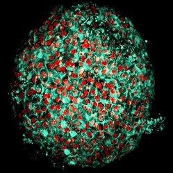

Our Research
Stem cells are defined by their ability to self-renew and give rise to progeny cells. They are present during all stages of life and during disease development. How these cells are formed, maintained, and give rise to somatic cells continues to fascinate many. Understanding how stem cells regulate cell plasticity and self-renewal has broad implications from unraveling basic cellular processes, understanding organ formation and tissue repair, to tackling degenerative disease and cancer. At the same time, stem cell base therapeutics could solve many debilitating diseases. Through the derivation, culture, and manipulation of stem cells, our lab strives to unravel this fundamental knowledge and master the art of cell fate control in a dish.
Key research topics in the laboratory
stem cells in chronic disease and cancer
 Resident tissue stem and progenitor cells are essential for the replenishment of somatic cell loss in daily wear and tear, during acute injuries, as well as chronic disease manifestation. At the same time, these cells are exposed to a changing environment as one ages or suffers from illness. Increasing evidence suggests these cells can contribute to disease manifestation and are responsible for disease progression. Our lab is fascinated by how these cells could potentially harbor disease memories that promote disease relapse and recurrence, as well as their role in early cancer initiation. Specifically, our lab investigates 1) how stem and progenitor cells contribute to disease manifestation, 2) how these cells accumulate disease memories that promote disease susceptibility and relapse, and 3) how cancer cells manipulate these self-renewal programs during cancer initiation or progression. To achieve these goals, we employ various 2D and 3D culture systems to isolate self-renewing primary cell from adult tissues and generate associate organ disease models. Through in-depth molecular profiling of the disease stem cells and tissues, we strive to unravel molecular drivers for disease development and identify novel therapeutic strategies.
Resident tissue stem and progenitor cells are essential for the replenishment of somatic cell loss in daily wear and tear, during acute injuries, as well as chronic disease manifestation. At the same time, these cells are exposed to a changing environment as one ages or suffers from illness. Increasing evidence suggests these cells can contribute to disease manifestation and are responsible for disease progression. Our lab is fascinated by how these cells could potentially harbor disease memories that promote disease relapse and recurrence, as well as their role in early cancer initiation. Specifically, our lab investigates 1) how stem and progenitor cells contribute to disease manifestation, 2) how these cells accumulate disease memories that promote disease susceptibility and relapse, and 3) how cancer cells manipulate these self-renewal programs during cancer initiation or progression. To achieve these goals, we employ various 2D and 3D culture systems to isolate self-renewing primary cell from adult tissues and generate associate organ disease models. Through in-depth molecular profiling of the disease stem cells and tissues, we strive to unravel molecular drivers for disease development and identify novel therapeutic strategies.
Tissue regeneration therapeutics
 As the body age and suffers from chronic disease and acute injury, the tissue regenerative capacity is gradually diminished. Loss of resident tissue stem cells or impairment of stem cell regenerative capacity likely play a major role in the process. Our lab aims to develop innovative solutions to regenerate this program in the adult human body. Specifically, we aim to develop novel strategies to 1) Rejuvenate and expand stem cell populations in the adult tissue and 2) Remodel micro-environments that impair the tissue regenerative program. To this end, we developed human organoid models from pluripotent stem cells and adult tissue that enable screening of therapeutic modalities including small molecules and engineered exosomes.
As the body age and suffers from chronic disease and acute injury, the tissue regenerative capacity is gradually diminished. Loss of resident tissue stem cells or impairment of stem cell regenerative capacity likely play a major role in the process. Our lab aims to develop innovative solutions to regenerate this program in the adult human body. Specifically, we aim to develop novel strategies to 1) Rejuvenate and expand stem cell populations in the adult tissue and 2) Remodel micro-environments that impair the tissue regenerative program. To this end, we developed human organoid models from pluripotent stem cells and adult tissue that enable screening of therapeutic modalities including small molecules and engineered exosomes.